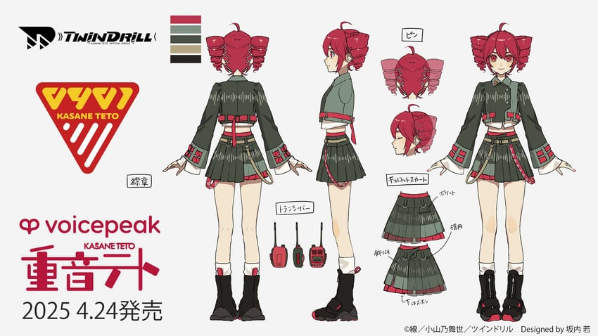

El 1 de abril de 2025, AH‑Software, junto con TWINDRILL, confirmó que Teto recibiría una biblioteca de voz para VOICEPEAK, lanzada el 24 de abril de 2025.
Este nuevo diseño se basa en una combinación de colores gris oscuro con vivos rojos y blancos, recreando el estilo militar-idol inspirado en bandas de música de desfile. Este look recuerda tanto a su diseño original de 2008 como a la versión SynthV de 2023.
Posee una camisa gris clara de corte cruzado, con detalles de doble manga: una larga y otra corta con volantes y ribete rojo. Cuello rígido decorado con una placa que lleva el código “0401”, número emblemático de Teto. Botonería dorada y puños negros con hebillas rojas, evocando uniformes militares de banda. Chaqueta corta que enfatiza la cintura, remarcando el estilo idol actual. Falda gris de talle alto con una capa inferior negra con flecos, aportando volumen. Borde rojo que resalta el conjunto y coordina con los detalles superiores. Patrón de líneas onduladas impresas, evocando pentagramas y la temática musical central de VOICEPEAK. Cinturón rojo colgante, una evolución de su “hanging belt” original, que a veces es interpretado como una “cola” artificial. Botas de tacón medio, con cordones visibles en la parte trasera hasta media pantorrilla. Su estilo lace-up combina la nostalgia del diseño UTAU (botas altas) con la funcionalidad moderna.
Al ser una voz muy recinete, no tiene muchas canciones a resaltar (salvo la canción de presentación de la voz, titulada "KASANE TETO VOICEPEAK").